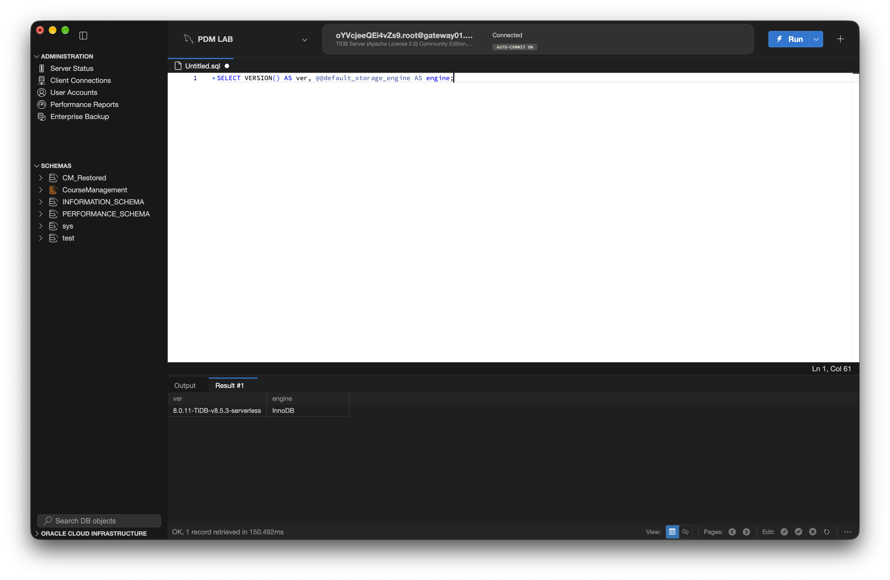
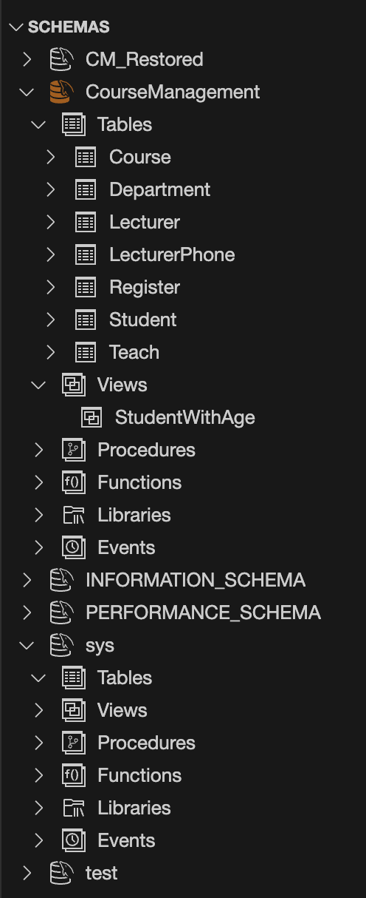
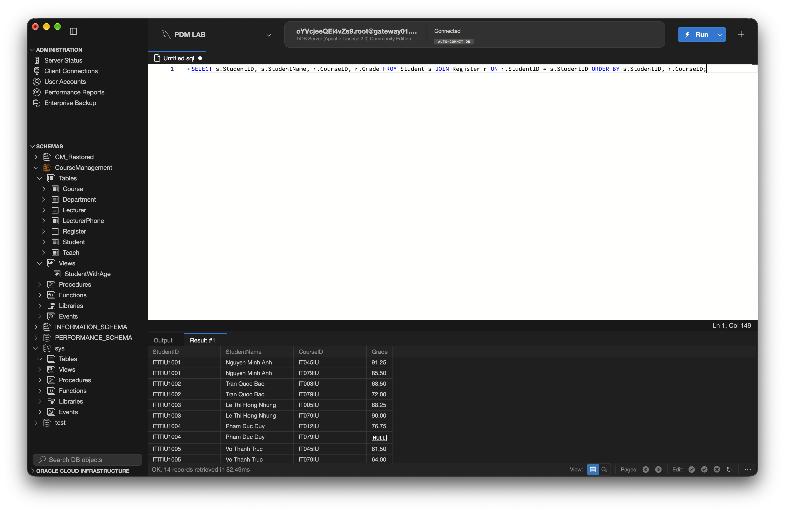
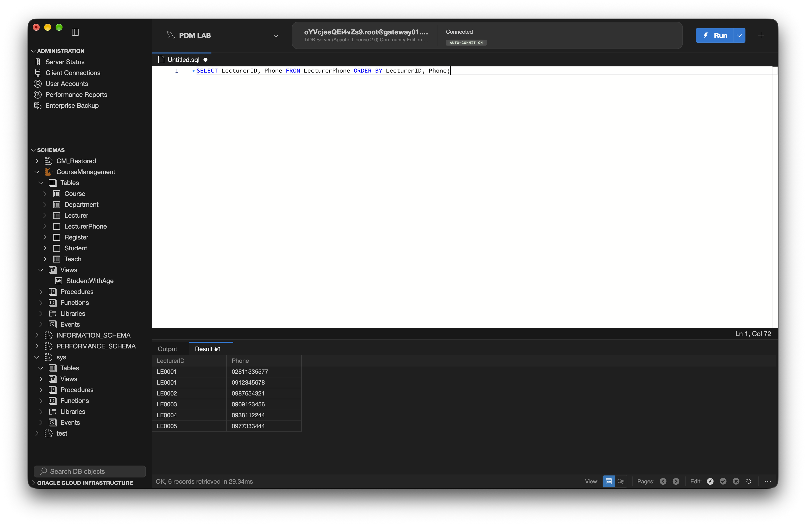
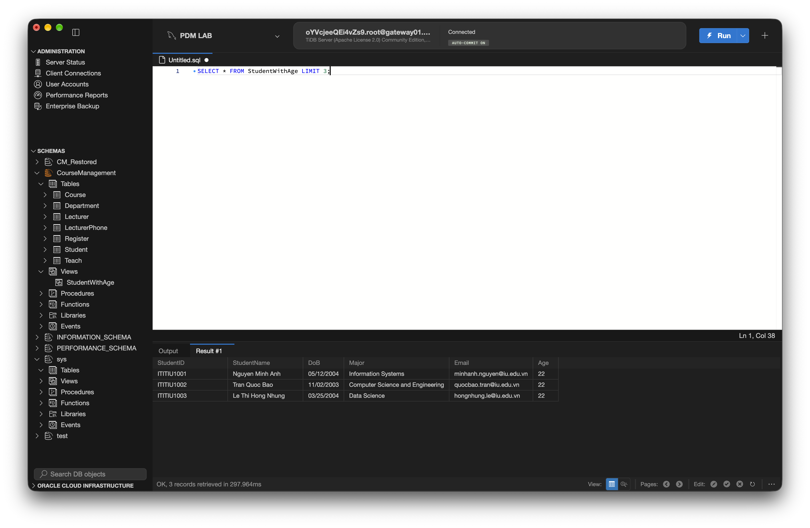
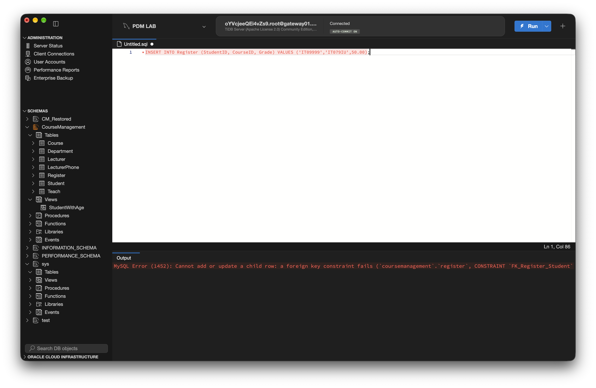
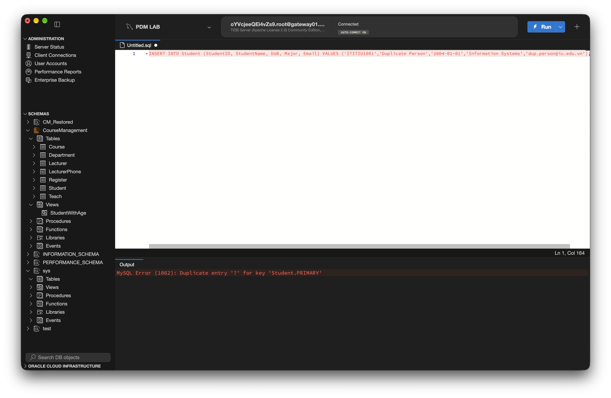
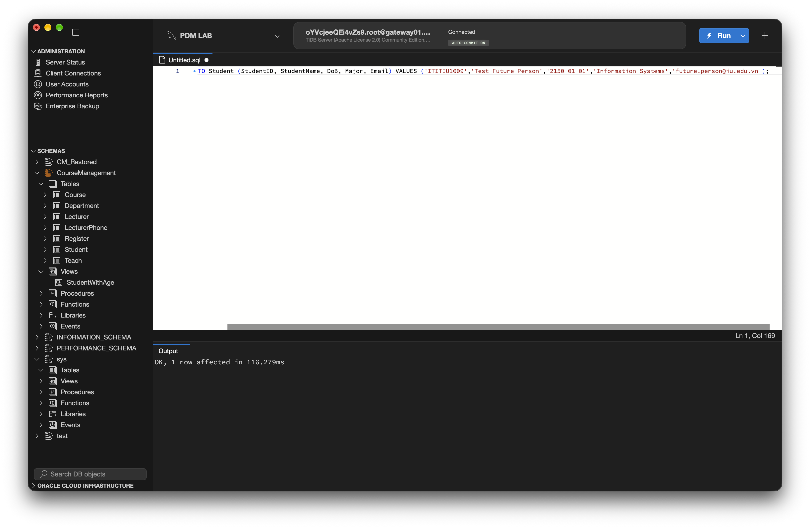
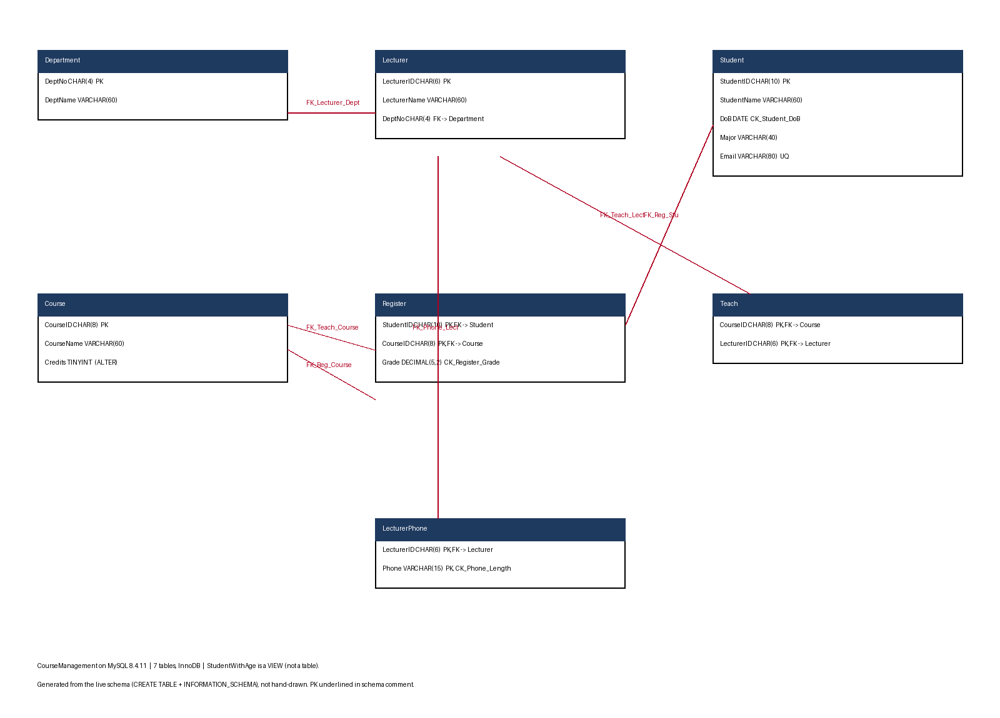

Le Thanh Trung - ITCSIU25055 - Lab 3 (From ER Diagram to a Running Database: MySQL, CREATE and Constraints)
Engines: local MySQL 8.4.11 (Docker, marker parity) + TiDB Serverless 8.0.11-TiDB-v8.5.3 (assigned server). Script runs twice clean on both.

Local MySQL 8.4 container pdmlab-mysql84 on localhost:3306; Workbench connection PDM LAB targets TiDB. No passwords in screenshots.
Full schema with underlined PKs, *-marked FKs and separately stated referential constraints is the header comment of create_coursemanagement.sql (reproduced in the script listing below).




Counts exceed minima: 4 departments, 6 lecturers, 8 students, 5 courses, 14 registrations, phones for 5 lecturers. ALTERs: Course ADD Credits (column) + LecturerPhone ADD CK_Phone_Length (constraint). Third CHECK pair: CK_Student_DoB, CK_Register_Grade.
Precision note: Register.Grade is DECIMAL(5,2), not the snippet's 4,2 - with 4,2 a grade of 150 dies on the column range (ERROR 1264) and the named CHECK never fires. 5,2 lets the value exist so CK_Register_Grade is what rejects it.
| # | Statement | MySQL 8.4 result | Enforcer |
|---|---|---|---|
| 1 | INSERT INTO Register VALUES ('IT09999','IT079IU',50.00) | ERROR 1452 (23000): Cannot add or update a child row: a foreign key constraint fails (CONSTRAINT FK_Register_Student) | FK_Register_Student |
| 2 | INSERT INTO Student ... ('ITITIU1001',...) | ERROR 1062 (23000): Duplicate entry 'ITITIU1001' for key 'Student.PRIMARY' | PRIMARY |
| 3 | INSERT INTO Student ... ('ITITIU1009',...,'2150-01-01',...) | ERROR 3819 (HY000): Check constraint 'CK_Student_DoB' is violated. | CK_Student_DoB |
| 4 | INSERT INTO Register VALUES ('ITITIU1007','IT045IU',150.00) | ERROR 3819 (HY000): Check constraint 'CK_Register_Grade' is violated. | CK_Register_Grade |
| 5 | DELETE FROM Course WHERE CourseID='IT079IU' | ERROR 1451 (23000): Cannot delete or update a parent row: a foreign key constraint fails (CONSTRAINT FK_Register_Course) | FK_Register_Course |



Cases 4-5: no Workbench screenshots were provided; evidence is the CLI-captured MySQL 8.4 errors above (each statement run individually). Schema-vs-application (0.5): constraints live in the schema so every access path - any app, notebook, dump-restore, manual SQL - is checked by the engine. App-side checks only cover the paths the app implements; a second client, a forgotten form, or a raw INSERT bypasses them silently.

D1 - two things from the ER diagram (sec 3) gone from the DB diagram: (1) the derived attribute Age - never stored, computed at query time by the StudentWithAge view; (2) the relationship diamonds Belong/Register/Teach and the multivalued Phone - Belong became the FK column Lecturer.DeptNo, Register and Teach became tables with two FKs each, Phone became the LecturerPhone table. A relationship cannot hold rows; only an entity table can.
D2 - Register as a table with two FKs: produced by the M:N relationship Register (Student-Course) carrying Grade. It could not stay a relationship because the relational model has no relationship construct - to store one grade per (student, course) pair and enforce both referential lines, the M:N must be mapped to its own table with a composite PK and two FKs.
Submission dump (MySQL 8.4): mysqldump -uroot --databases CourseManagement --routines --triggers > CourseManagement_backup.sql (268 lines, 7 CREATE TABLE, Grade decimal(5,2)). Restore path: table-only dump into CM_Restored. TiDB pair used --no-tablespaces. No screenshots were provided for this step; counts below are CLI-verified on both engines.
| db | regs | studs | courses |
|---|---|---|---|
| CourseManagement | 14 | 8 | 5 |
| CM_Restored | 14 | 8 | 5 |
Counts match on MySQL 8.4.11 and on TiDB (14/8/5 both databases).
create_coursemanagement.sql (runs twice clean on fresh MySQL 8.4 and on TiDB) and CourseManagement_backup.sql (MySQL 8.4 logical dump with CREATE DATABASE/USE).
-- ============================================================================
-- IT079IU - Principles of Database Management
-- Lab 3: From ER Diagram to a Running Database - MySQL, CREATE and Constraints
--
-- Student: Le Thanh Trung (ITCSIU25055)
-- Script: create_coursemanagement.sql
-- Target: MySQL Community Server 8.0.16+ / 8.4 LTS, InnoDB storage engine
-- Usage: runs top to bottom on a fresh MySQL server AND succeeds on a second
-- run on the same server without manual intervention.
-- The only reset is the CourseManagement lab database itself.
--
-- Naming convention for constraints: PK_<table>, FK_<table>_<reftable>,
-- UQ_<table>_<column>, CK_<table>_<rule>
-- ============================================================================
-- ----------------------------------------------------------------------------
-- PART B.1 - RELATION SCHEMA (full, style of lab section 4.2)
-- Primary keys underlined with ---- ; foreign keys marked with *
-- ----------------------------------------------------------------------------
--
-- Department (DeptNo, DeptName)
-- -------
-- Entity integrity : DeptNo NOT NULL, unique -> primary key
-- Domain integrity : DeptNo CHAR(4); DeptName VARCHAR(60) NOT NULL
--
-- Lecturer (LecturerID, LecturerName, DeptNo*)
-- --------------
-- Entity integrity : LecturerID NOT NULL, unique -> primary key
-- Domain integrity : LecturerName VARCHAR(60) NOT NULL;
-- DeptNo CHAR(4) NOT NULL
-- Referential : Lecturer[DeptNo] subset-of Department[DeptNo]
-- ON DELETE RESTRICT ON UPDATE RESTRICT
-- (a lecturer cannot be orphaned from a department)
--
-- Student (StudentID, StudentName, DoB, Major, Email)
-- -----------
-- Entity integrity : StudentID NOT NULL, unique -> primary key
-- Domain integrity : StudentName VARCHAR(60) NOT NULL; DoB DATE NOT NULL;
-- Major VARCHAR(40) NULL; Email VARCHAR(80) NULL unique
-- CHECK (DoB) : DoB BETWEEN '1900-01-01' AND '2026-10-15'
-- - age is a DERIVED attribute: not stored (see the
-- StudentWithAge view below)
-- Note on the fixed bound: MySQL CHECK expressions cannot use CURDATE()
-- (non-deterministic functions are rejected), so the upper bound is the lab
-- date 2026-10-15 rather than "today". In production, "not in the future"
-- would be enforced by a trigger or application validation as well.
--
-- Course (CourseID, CourseName) [Credits added by ALTER below]
-- --------
-- Entity integrity : CourseID NOT NULL, unique -> primary key
-- Domain integrity : CourseName VARCHAR(60) NOT NULL;
-- Credits TINYINT UNSIGNED NOT NULL DEFAULT 3 (ALTER)
--
-- LecturerPhone (LecturerID*, Phone) [phone length CHECK added by ALTER]
-- -------
-- Entity integrity : (LecturerID, Phone) composite -> primary key;
-- a phone number belongs to exactly one lecturer
-- Domain integrity : Phone VARCHAR(15) NOT NULL,
-- CHAR_LENGTH(Phone) BETWEEN 7 AND 15 (ALTER)
-- Referential : LecturerPhone[LecturerID] subset-of Lecturer[LecturerID]
-- ON DELETE CASCADE ON UPDATE CASCADE
-- (a phone has no meaning without its lecturer)
--
-- Register (StudentID*, CourseID*, Grade)
-- ----------
-- Entity integrity : (StudentID, CourseID) composite -> primary key
-- Domain integrity : Grade DECIMAL(5,2) NULL, CHECK BETWEEN 0 AND 100;
-- NULL allowed = registered but grade not yet assigned.
-- Precision is deliberately 5,2 (not the 4,2 of the lab
-- snippet): with 4,2 an out-of-range grade like 150 would
-- be rejected by the column range (ERROR 1264) and the
-- check would never fire. The 0-100 rule must live in the
-- named constraint, not silently in the type.
-- Referential : Register[StudentID] subset-of Student[StudentID]
-- ON DELETE CASCADE ON UPDATE CASCADE
-- (delete a student -> their registrations go too)
-- Register[CourseID] subset-of Course[CourseID]
-- ON DELETE RESTRICT ON UPDATE RESTRICT
-- (a course that still has registrations cannot die)
--
-- Teach (CourseID*, LecturerID*)
-- ------
-- Entity integrity : (CourseID, LecturerID) composite -> primary key
-- Referential : Teach[CourseID] subset-of Course[CourseID]
-- ON DELETE RESTRICT ON UPDATE RESTRICT
-- Teach[LecturerID] subset-of Lecturer[LecturerID]
-- ON DELETE RESTRICT ON UPDATE RESTRICT
--
-- Referential constraints (stated separately):
-- Lecturer[DeptNo] subset-of Department[DeptNo]
-- Register[StudentID] subset-of Student[StudentID]
-- Register[CourseID] subset-of Course[CourseID]
-- LecturerPhone[LecturerID] subset-of Lecturer[LecturerID]
-- Teach[CourseID] subset-of Course[CourseID]
-- Teach[LecturerID] subset-of Lecturer[LecturerID]
-- SET DEFAULT is NOT used anywhere: MySQL InnoDB does not support it as a
-- foreign-key referential action (see lab section 4.3).
-- ----------------------------------------------------------------------------
-- ----------------------------------------------------------------------------
-- PART B.2 - CREATE AND SELECT THE DATABASE
-- ----------------------------------------------------------------------------
DROP DATABASE IF EXISTS CourseManagement;
CREATE DATABASE CourseManagement
CHARACTER SET utf8mb4
COLLATE utf8mb4_0900_ai_ci;
USE CourseManagement;
-- ----------------------------------------------------------------------------
-- PART B.3 - CREATE TABLES, PARENTS BEFORE CHILDREN
-- ----------------------------------------------------------------------------
-- Parent table: Department
CREATE TABLE Department (
DeptNo CHAR(4) NOT NULL,
DeptName VARCHAR(60) NOT NULL,
CONSTRAINT PK_Department PRIMARY KEY (DeptNo),
CONSTRAINT CK_Department_DeptNo_Format
CHECK (CHAR_LENGTH(DeptNo) = 4)
) ENGINE = InnoDB;
-- Strong entity: Student (age is NOT stored - it is derived; see the view)
CREATE TABLE Student (
StudentID CHAR(10) NOT NULL,
StudentName VARCHAR(60) NOT NULL,
DoB DATE NOT NULL,
Major VARCHAR(40) NULL,
Email VARCHAR(80) NULL,
CONSTRAINT PK_Student PRIMARY KEY (StudentID),
CONSTRAINT UQ_Student_Email UNIQUE (Email),
-- Fixed upper bound: MySQL CHECK cannot call CURDATE(); bound = lab date.
-- Part C case 3 (2150-01-01) is rejected by this constraint.
CONSTRAINT CK_Student_DoB
CHECK (DoB BETWEEN '1900-01-01' AND '2026-10-15')
) ENGINE = InnoDB;
-- Strong entity: Lecturer, with the 1:N "Belong" mapping: the key of the 1
-- side (Department) is placed in the table of the N side (Lecturer).
CREATE TABLE Lecturer (
LecturerID CHAR(6) NOT NULL,
LecturerName VARCHAR(60) NOT NULL,
DeptNo CHAR(4) NOT NULL,
CONSTRAINT PK_Lecturer PRIMARY KEY (LecturerID),
CONSTRAINT FK_Lecturer_Department FOREIGN KEY (DeptNo)
REFERENCES Department (DeptNo)
ON DELETE RESTRICT ON UPDATE RESTRICT
) ENGINE = InnoDB;
-- Strong entity: Course
CREATE TABLE Course (
CourseID CHAR(8) NOT NULL,
CourseName VARCHAR(60) NOT NULL,
CONSTRAINT PK_Course PRIMARY KEY (CourseID)
) ENGINE = InnoDB;
-- Multivalued attribute: one lecturer can have many phone numbers.
-- A lecturer's phones die with the lecturer (CASCADE) and key changes cascade
-- outward from Lecturer: NULL is not allowed, so SET NULL is not an option.
CREATE TABLE LecturerPhone (
LecturerID CHAR(6) NOT NULL,
Phone VARCHAR(15) NOT NULL,
CONSTRAINT PK_LecturerPhone PRIMARY KEY (LecturerID, Phone),
CONSTRAINT FK_LecturerPhone_Lecturer FOREIGN KEY (LecturerID)
REFERENCES Lecturer (LecturerID)
ON DELETE CASCADE ON UPDATE CASCADE
) ENGINE = InnoDB;
-- M:N relationship "Register": resolved into a table with two foreign keys,
-- because a relationship cannot hold rows - only an entity table can.
-- DECIMAL(5,2) so that an illegal 150 is caught by CK_Register_Grade
-- (the named constraint), not by the column's own range.
CREATE TABLE Register (
StudentID CHAR(10) NOT NULL,
CourseID CHAR(8) NOT NULL,
Grade DECIMAL(5,2) NULL,
CONSTRAINT PK_Register PRIMARY KEY (StudentID, CourseID),
CONSTRAINT FK_Register_Student FOREIGN KEY (StudentID)
REFERENCES Student (StudentID)
ON DELETE CASCADE ON UPDATE CASCADE,
CONSTRAINT FK_Register_Course FOREIGN KEY (CourseID)
REFERENCES Course (CourseID)
ON DELETE RESTRICT ON UPDATE RESTRICT,
CONSTRAINT CK_Register_Grade CHECK (Grade BETWEEN 0 AND 100)
) ENGINE = InnoDB;
-- M:N relationship "Teach": a course may be taught by several lecturers and a
-- lecturer may teach several courses.
CREATE TABLE Teach (
CourseID CHAR(8) NOT NULL,
LecturerID CHAR(6) NOT NULL,
CONSTRAINT PK_Teach PRIMARY KEY (CourseID, LecturerID),
CONSTRAINT FK_Teach_Course FOREIGN KEY (CourseID)
REFERENCES Course (CourseID)
ON DELETE RESTRICT ON UPDATE RESTRICT,
CONSTRAINT FK_Teach_Lecturer FOREIGN KEY (LecturerID)
REFERENCES Lecturer (LecturerID)
ON DELETE RESTRICT ON UPDATE RESTRICT
) ENGINE = InnoDB;
-- ----------------------------------------------------------------------------
-- PART B.4 - STUDENT AGE AS A VIEW (derived attribute is never stored)
-- MySQL cannot use CURDATE() in a generated column, and a generated column
-- would go stale anyway; the view computes the age at query time.
-- ----------------------------------------------------------------------------
CREATE VIEW StudentWithAge AS
SELECT StudentID, StudentName, DoB, Major, Email,
TIMESTAMPDIFF(YEAR, DoB, CURDATE()) AS Age
FROM Student;
-- ----------------------------------------------------------------------------
-- PART B.6a - ALTER: add a COLUMN to an existing table
-- ----------------------------------------------------------------------------
ALTER TABLE Course
ADD COLUMN Credits TINYINT UNSIGNED NOT NULL DEFAULT 3;
-- PART B.6b - ALTER: add a CONSTRAINT to an existing table
ALTER TABLE LecturerPhone
ADD CONSTRAINT CK_Phone_Length
CHECK (CHAR_LENGTH(Phone) BETWEEN 7 AND 15);
-- ----------------------------------------------------------------------------
-- PART B.5 - SAMPLE DATA (plausible, no placeholder rows)
-- Parent rows are inserted before the children that reference them.
-- ----------------------------------------------------------------------------
INSERT INTO Department (DeptNo, DeptName) VALUES
('ISYS', 'Information Systems'),
('CSEN', 'Computer Science and Engineering'),
('BIOT', 'Biotechnology'),
('MATH', 'Mathematics and Statistics');
INSERT INTO Student (StudentID, StudentName, DoB, Major, Email) VALUES
('ITITIU1001', 'Nguyen Minh Anh', '2004-05-12', 'Information Systems', 'minhanh.nguyen@iu.edu.vn'),
('ITITIU1002', 'Tran Quoc Bao', '2003-11-02', 'Computer Science and Engineering', 'quocbao.tran@iu.edu.vn'),
('ITITIU1003', 'Le Thi Hong Nhung', '2004-03-25', 'Data Science', 'hongnhung.le@iu.edu.vn'),
('ITITIU1004', 'Pham Duc Duy', '2003-08-17', 'Information Systems', 'ducduy.pham@iu.edu.vn'),
('ITITIU1005', 'Vo Thanh Truc', '2004-12-09', 'Software Engineering', 'thanhtruc.vo@iu.edu.vn'),
('ITITIU1006', 'Dang Ngoc Mai', '2005-01-30', 'Computer Science and Engineering', 'ngocmai.dang@iu.edu.vn'),
('ITITIU1007', 'Bui Tuan Kiet', '2003-06-14', 'Information Systems', 'tuankiet.bui@iu.edu.vn'),
('ITITIU1008', 'Hoang Thu Ha', '2004-09-21', 'Data Science', 'thuha.hoang@iu.edu.vn');
INSERT INTO Lecturer (LecturerID, LecturerName, DeptNo) VALUES
('LE0001', 'Dr. Nguyen Van Hien', 'ISYS'),
('LE0002', 'Dr. Tran Thi Lan', 'ISYS'),
('LE0003', 'Dr. Le Hoang Nam', 'CSEN'),
('LE0004', 'MSc. Pham Minh Tuan', 'CSEN'),
('LE0005', 'Dr. Vo Thi Kim Ngan', 'MATH'),
('LE0006', 'MSc. Doan Gia Khang', 'BIOT');
-- IT079IU gets its Credits from the ALTER default (3) - it proves DEFAULT.
INSERT INTO Course (CourseID, CourseName) VALUES
('IT079IU', 'Principles of Database Management');
INSERT INTO Course (CourseID, CourseName, Credits) VALUES
('IT003IU', 'Data Structures and Algorithms', 3),
('IT005IU', 'Object-Oriented Programming', 3),
('IT012IU', 'Computer Networks', 3),
('IT045IU', 'Machine Learning Fundamentals', 2);
-- Phone numbers for 5 lecturers (requirement: at least 3).
INSERT INTO LecturerPhone (LecturerID, Phone) VALUES
('LE0001', '0912345678'),
('LE0001', '02811335577'),
('LE0002', '0987654321'),
('LE0003', '0909123456'),
('LE0004', '0938112244'),
('LE0005', '0977333444');
-- M:N Teach pairs (who teaches what).
INSERT INTO Teach (CourseID, LecturerID) VALUES
('IT079IU', 'LE0001'),
('IT079IU', 'LE0002'),
('IT003IU', 'LE0003'),
('IT005IU', 'LE0003'),
('IT005IU', 'LE0004'),
('IT012IU', 'LE0004'),
('IT045IU', 'LE0005'),
('IT045IU', 'LE0006');
-- 14 registrations (requirement: at least 12).
-- Registration 7 has Grade = NULL: registered, grade not yet assigned.
INSERT INTO Register (StudentID, CourseID, Grade) VALUES
('ITITIU1001', 'IT079IU', 85.50),
('ITITIU1001', 'IT045IU', 91.25),
('ITITIU1002', 'IT079IU', 72.00),
('ITITIU1002', 'IT003IU', 68.50),
('ITITIU1003', 'IT079IU', 90.00),
('ITITIU1003', 'IT005IU', 88.25),
('ITITIU1004', 'IT079IU', NULL),
('ITITIU1004', 'IT012IU', 76.75),
('ITITIU1005', 'IT079IU', 64.00),
('ITITIU1005', 'IT045IU', 81.50),
('ITITIU1006', 'IT003IU', 55.25),
('ITITIU1006', 'IT079IU', 93.00),
('ITITIU1007', 'IT079IU', 49.00),
('ITITIU1008', 'IT079IU', 78.00);
-- ----------------------------------------------------------------------------
-- PART B.7 - THREE SELECTs THAT PROVE THE DATA IS THERE
-- (the second one joins two tables)
-- ----------------------------------------------------------------------------
-- 1) Table Course, including the ALTERed Credits column:
SELECT CourseID, CourseName, Credits
FROM Course
ORDER BY CourseID;
-- 2) Joins two tables (Student and Register), with grade NULL shown as NULL:
SELECT s.StudentID, s.StudentName, r.CourseID, r.Grade
FROM Student s
JOIN Register r ON r.StudentID = s.StudentID
ORDER BY s.StudentID, r.CourseID;
-- 3) Table LecturerPhone: multivalued attribute is now rows, not columns:
SELECT LecturerID, Phone
FROM LecturerPhone
ORDER BY LecturerID, Phone;
-- End of create_coursemanagement.sql
AI use: Claude/OpenCode assisted with script authoring, testing, and documentation.